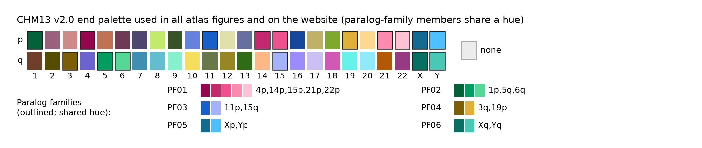

Methods
Overview
- Windows. For every telomeric contig end of the HPRC Release 2 assemblies, the outermost 100 kb were range-read from the public assemblies and oriented telomere → centromere (tip frame); CHM13 v2.0, HG002 Q100 and WashU pedigree ends were added (pedigree ends are used only as validation evidence). The terminal (CCCTAA)n block is masked and all coordinates are measured from the telomere/subtelomere boundary.
- Home arm. From the contig name; otherwise from 10 kb probes at 250 kb and 1 Mb mapped to CHM13
(calibrated on named tips); otherwise from the mosaic. Acrocentric short arms and the PARs are pooled
(
acroP,PAR1,PAR2). - Mosaics (revision 2). One alignment of each window to the outer 500 kb of the 48 CHM13 ends gives per-base identity tracks; a sliding identity on a 100 bp grid anchored at the contig tip is labelled home, paralog family, CHM13 arm or none, short runs are merged and boundaries refined at base level. The grid does not depend on where the telomere boundary is called, which makes alleles stable under boundary shifts (validation).
- Structural alleles. Core structures (blocks ≥ 10 kb) with switch positions agreeing within 10 kb
(complete linkage) define
SA-<arm>-NN; partial and low-confidence ends are assigned to the compatible allele with the nearest median switches. Identifiers changed in revision 2; see id_history.tsv. - Haplogroups. Within-arm all-vs-all FracMinHash ANI over the first
80 kb of subtelomere, UPGMA cut at ANI 0.995,
validated by alignment to the medoid (
HG-<arm>-NN). - Evidence and tiers. Recurrence in ≥ 3 unrelated samples plus orthogonal lines (Verkko assemblies of the same haplotypes, HG002 Q100 reads or hifiasm read layouts across switches, intact pedigree transmission, presence in a T2T assembly) give tiers A/B/C; see validation.
Paralog families, the home rule and nativity classes
How blocks are labelled (catalogue revision 2). At every 100 bp point of an end's subtelomere, the identity of the surrounding 5 kb to each of the 48 CHM13 v2.0 ends is read from one alignment of the whole window.
- Home rule. A point is home if a CHM13 copy of the end's own arm (or of an arm in its pooled group) is within 0.5 percentage points of the best identity, so home wins ties.
- Paralog families. Some CHM13 ends share long, near-identical duplicated blocks, so the single best end
can flip between them. Ends that are tied with each other at ≥ 0.75 of the points where
the less often tied one is tied form a family; a non-home block is labelled with the family of its best end, otherwise
with that end's arm. Families: PF01 = 4p, 14p, 15p, 21p, 22p; PF02 = 1p, 5q, 6q; PF03 = 11p, 15q; PF04 = 3q, 19p; PF05 = Xp, Yp; PF06 = Xq, Yq. The best single CHM13 end of each block is kept as
best_end. - none. No CHM13 end within 0.80 identity: sequence without a close CHM13 counterpart (neither home nor foreign evidence).
- Nativity class of a core structure: native = only home (and none) blocks; within family = every non-home block is in a family that contains the end's own arm; foreign = at least one block from another family or arm.
Paralog families (from paralog_families.tsv):
| family | n_members | members | min_cotie_rate | median_cotie_rate | tied_points |
|---|---|---|---|---|---|
| PF01 | 5 | 4p,14p,15p,21p,22p | 0.8257 | 0.8516 | 705433 |
| PF02 | 3 | 1p,5q,6q | 0.8168 | 0.8218 | 519915 |
| PF03 | 2 | 11p,15q | 0.8916 | 0.8916 | 260630 |
| PF04 | 2 | 3q,19p | 0.8077 | 0.8077 | 322601 |
| PF05 | 2 | Xp,Yp | 0.9177 | 0.9177 | 68591 |
| PF06 | 2 | Xq,Yq | 0.9896 | 0.9896 | 83431 |
Details and worked example (QC report section 10)
10. Paralog families, the home rule, nativity classes and none blocks
Plain-language definitions. At every 100 bp point of an end's subtelomere, the identity of the surrounding 5 kb to each of the 48 CHM13 v2.0 ends is read from one alignment of the whole window. (1) Home rule: the point is labelled home if a CHM13 copy of the end's own arm (or of an arm of its pooled group: acroP, PAR1, PAR2) is within 0.5 percentage points of the best identity; home therefore wins ties. (2) Paralog families: some CHM13 ends share long, near-identical duplicated blocks, so the best end at a point can flip between them with small sequence or boundary changes. Two CHM13 ends are put in one family when, over all defining catalogue ends, they are tied with each other (both within the margin of the best) at >= 0.75 of the points where the less often tied of the two is tied (and at >= 200 points); families are the connected groups of such pairs (paralog_families.tsv). A point that is not home is labelled with the family of its best end (PF01...), or with that end's arm if it belongs to no family. The family is a property of the CHM13 ends across the catalogue, not of the individual block: inside a given block the other members may or may not be tied (column mean_tied of mosaic_blocks.tsv; the single best CHM13 end of each block is kept in best_end and of each fixed window in S*_best_end). (3) none: the best identity to every CHM13 end is < 0.80 at that point, i.e. sequence without a close CHM13 counterpart (for example sequence absent from CHM13, or diverged beyond 20%); it is neither home nor foreign evidence. After merging blocks < 10 kb into their neighbours, a none block in a core structure is >= 10 kb of such sequence; switches next to a none block are kept at grid resolution.
Worked example: HG02129#2#CM085868.1#R (catalogue arm 20q, allele SA-20q-01; one of the query-tool test windows in tests/fixtures/windows.fa.gz). Its outer 31,040 bp of subtelomere best match CHM13 3q. In the previous build its form was 20q>3q; it is now 20q>PF04 (core structure PF04|home), because CHM13 3q and 19p form family PF04 (co-tied at 0.81 of the points where the less often tied of the two is tied, over the catalogue). S20_best_end keeps chr3q. Over this block the end matches CHM13 3q at a median 99.92%, 19p at 98.34% and its own arm 20q at 98.36% (19p within the 0.5-point margin of 3q at 0% of 311 points): the block is specifically 3q-like, and the family label records only that 3q belongs to a pair of CHM13 ends that are often interchangeable elsewhere in the catalogue.
Nativity class (nativity_class in ends.tsv and alleles_structural.tsv; shared function subtel_atlas.tracks.nativity_class, also in the query tool), from the core structure: native = only home (and none) blocks; within_family = non-home blocks, all labelled with a family that contains the own arm (or a member of its pooled group), i.e. sequence closer to another member's CHM13 copy of a shared family block than to the own-arm copy; foreign = at least one block labelled with a family or CHM13 arm that does not contain the own arm. is_native (structure exactly home) is kept.
| table | n | native | within_family | foreign |
|---|---|---|---|---|
| Release 2 ends | 20144 | 14461 | 747 | 4936 |
| all catalogue ends | 20652 | 14827 | 771 | 5054 |
| structural alleles | 647 | 67 | 49 | 531 |
| structural alleles with is_native | 42 | 42 | 0 | 0 |
Native-class alleles that are not is_native contain none blocks only besides home (e.g. home|none|home). Per catalogue arm, Release 2 ends:
| catalogue_arm | n | native | within_family | foreign | foreign_frac |
|---|---|---|---|---|---|
| 10p | 433 | 428 | 0 | 5 | 0.012 |
| 10q | 447 | 404 | 0 | 43 | 0.096 |
| 11p | 447 | 162 | 3 | 282 | 0.631 |
| 11q | 441 | 441 | 0 | 0 | 0.0 |
| 12p | 443 | 424 | 0 | 19 | 0.043 |
| 12q | 445 | 444 | 0 | 1 | 0.002 |
| 13q | 442 | 439 | 0 | 3 | 0.007 |
| 14q | 439 | 439 | 0 | 0 | 0.0 |
| 15q | 440 | 184 | 44 | 212 | 0.482 |
| 16p | 431 | 309 | 0 | 122 | 0.283 |
| 16q | 439 | 197 | 0 | 242 | 0.551 |
| 17p | 441 | 208 | 0 | 233 | 0.528 |
| 17q | 448 | 72 | 0 | 376 | 0.839 |
| 18p | 436 | 429 | 0 | 7 | 0.016 |
| 18q | 446 | 445 | 0 | 1 | 0.002 |
| 19p | 441 | 47 | 6 | 388 | 0.88 |
| 19q | 448 | 362 | 0 | 86 | 0.192 |
| 1p | 436 | 53 | 296 | 87 | 0.2 |
| 1q | 439 | 438 | 0 | 1 | 0.002 |
| 20p | 444 | 201 | 0 | 243 | 0.547 |
| 20q | 440 | 201 | 0 | 239 | 0.543 |
| 21q | 442 | 431 | 0 | 11 | 0.025 |
| 22q | 441 | 434 | 0 | 7 | 0.016 |
| 2p | 438 | 438 | 0 | 0 | 0.0 |
| 2q | 442 | 293 | 0 | 149 | 0.337 |
| 3p | 443 | 443 | 0 | 0 | 0.0 |
| 3q | 435 | 54 | 65 | 316 | 0.726 |
| 4p | 446 | 384 | 60 | 2 | 0.004 |
| 4q | 426 | 192 | 0 | 234 | 0.549 |
| 5p | 448 | 448 | 0 | 0 | 0.0 |
| 5q | 440 | 217 | 181 | 42 | 0.095 |
| 6p | 439 | 30 | 0 | 409 | 0.932 |
| 6q | 433 | 209 | 92 | 132 | 0.305 |
| 7p | 451 | 350 | 0 | 101 | 0.224 |
| 7q | 442 | 442 | 0 | 0 | 0.0 |
| 8p | 450 | 142 | 0 | 308 | 0.684 |
| 8q | 445 | 443 | 0 | 2 | 0.004 |
| 9p | 436 | 185 | 0 | 251 | 0.576 |
| 9q | 449 | 129 | 0 | 320 | 0.713 |
| PAR1 | 439 | 439 | 0 | 0 | 0.0 |
| PAR2 | 441 | 388 | 0 | 53 | 0.12 |
| acroP | 2049 | 2042 | 0 | 7 | 0.003 |
| unassigned | 3 | 1 | 0 | 2 | 0.667 |
none blocks: 45 of 647 structural alleles contain a none block (native 25, within_family 8, foreign 12); 388 of 20144 Release 2 ends have a none block in their core structure. Core none blocks: 398, median length 12,957 bp.
Local co-ties inside family-labelled raw blocks (12989 blocks; mean_tied is recorded on raw blocks): median mean_tied 2.14 CHM13 ends per point; 68.8% of blocks have mean_tied >= 1.5 (the best end at a typical point tied with at least one other CHM13 end).
Ends reclassified by is_native of their allele between revision 1 and revision 2 (CHANGELOG): class of the previous core structure (single-end tokens mapped to the published families) vs the revised class. The class is computed from the end's own core structure and allows none blocks, whereas is_native is a property of the assigned allele (structure exactly home); an end can therefore be class native while its allele is not is_native (all such Release 2 ends have none blocks: home|none, home|none|home, none|home):
native -> non-native (872 ends; rows previous class, columns revised class):
| previous / revised | foreign | native | within_family |
|---|---|---|---|
| native | 501 | 36 | 335 |
non-native -> native (456 ends; rows previous class, columns revised class):
| previous / revised | native |
|---|---|
| foreign | 364 |
| native | 2 |
| within_family | 90 |
All 20144 Release 2 ends, previous class (rows) vs revised class (columns):
| previous / revised | foreign | native | within_family |
|---|---|---|---|
| foreign | 4389 | 373 | 65 |
| native | 515 | 13997 | 363 |
| within_family | 32 | 91 | 319 |
Parameters and software
arm_probes | 10 kb at 250 kb and 1 Mb from the tip; minimap2 -x asm5 vs CHM13 v2.0; MAPQ >= 20 |
|---|---|
bin_bp | 5000 |
haplogroup_ani | 0.995 |
haplogroup_compared_bp | 80000 |
min_core_block_bp | 10000 |
near_tie | 0.98 |
sketch | FracMinHash k=21 scale=1/10 splitmix64 |
smoothing | 0.9 |
switch_tolerance_bp | 10000 |
window_bp | 100000 |
| mappy | 2.31 |
|---|---|
| minimap2 | 2.31-r1302 |
| numpy | 2.4.6 |
| pandas | 3.0.6 |
| python | 3.11.17 |
| samtools | samtools 1.24 |
| scipy | 1.17.1 |
Data sources
| chm13 | accession: GCA_009914755.4 doi: doi:10.1126/science.abj6987 name: T2T-CHM13 v2.0 url: https://human-pangenomics.s3.amazonaws.com/T2T/CHM13/assemblies/chm13v2.0.fa |
|---|---|
| hg002_q100 | name: HG002 Q100 v1.1 url: https://human-pangenomics.s3.amazonaws.com/T2T/HG002/assemblies/hg002v1.1.fasta.gz |
| hprc_release2 | accessions: per end in ends.tsv (assembly_accession) url_base: https://human-pangenomics.s3.amazonaws.com/working/HPRC/<sample>/assemblies/release2/ |
| pedigree | name: WashU PAN010/PAN011/PAN027/PAN028 v1.1 url_base: https://public.gi.ucsc.edu/~mcechova/pedigree/assemblies/v1.1/ |
| samples | data/metadata/samples.tsv (sibling track; see data/metadata/README.md) |
| telomere_cis_states | analyses/telomere_cis/results/fixed_window_states.tsv (sibling track, read only) |
Pipeline steps
bash pipeline/run_catalogue.sh rebuilds data/catalogue/ (release v0.1) from public assemblies and the analysis inputs named by ATLAS_INPUT_DIR (set in the git-ignored work/config.local.sh; see pipeline/config.sh). Large intermediates are written to work/ (git-ignored). Requirements: samtools/htslib with libcurl, minimap2, Python 3 with numpy, pandas, scipy, matplotlib, mappy and pysam.
The telomere caller, track alignment and labelling, paralog families, bin tiling (arm inference), arm, structure and haplogroup functions are implemented once in the query tool package (atlas/subtel_atlas; tracks in tracks.py), which the pipeline imports from the source tree; no installation is needed. The query tool labels a window with the same alignment settings, the published paralog families and the same labelling code as the catalogue.
| step | script | what it does |
|---|---|---|
| 1a | catalogue_01_plan_windows.py | 100 kb telomere-anchored window per Release 2 telomeric tip (20,144 tips; named and unnamed contigs); reuses earlier 100 kb range reads; plans 10 kb arm probes at 250 kb and 1 Mb for unnamed-contig tips and 1,000 random named tips (calibration) |
| 1b | catalogue_02_fetch_windows.sh | range reads from the public HPRC S3 bucket (samtools faidx on the bgzipped FASTA; 4 parallel jobs, 3 retries, .ok markers); HG002 Q100 v1.1 ends |
| 1c | catalogue_03_assemble_windows.py | orients every window telomere -> centromere, adds CHM13 v2.0 (48 ends), HG002 Q100 (92) and WashU pedigree ends (368, validation only), calls every telomere boundary on its own window (shared caller), extends windows to boundary + 80 kb where the boundary lies beyond 20 kb (range reads), records provenance and SHA-256, checks the first 20 kb against the earlier tip windows |
| 2a | catalogue_04_align_bins.py | 5 kb bins tiled from the telomere/subtelomere boundary aligned to the 48 CHM13 500 kb ends (minimap2 asm20); used only for the arm-inference fallback of unnamed contigs (step 2b); update mode recomputes only ends whose boundary or window changed (bins_stamp.tsv) |
| 2a' | catalogue_04t_align_tracks.py | one alignment of each whole subtelomere window (window[s0:]) to the 48 CHM13 ends (minimap2 asm20 -c, all chains up to 200 hits with secondary-to-primary score ratio 0.01, cs tags); shift mode re-aligns the stability subset from s0 + d (d = -1000 ... +1000 bp) |
| 2b | catalogue_05_arms.py | home arm: contig name, else probe mapping to CHM13 (calibrated), else bin-mosaic rule; pooled groups acroP/PAR1/PAR2 |
| 2c | catalogue_06t_mosaic_tracks.py | ties: base-level identity tracks per CHM13 end (5 kb windows sampled every 100 bp, in the end's own coordinates and therefore independent of the tiling phase); points where several ends tie (within 0.5 percentage points of the best) counted over the defining ends. families: two CHM13 ends are linked when they co-tie at >= 200 points and at >= 75% of the points where the rarer of the two is tied; connected ends form a paralog family (paralog_families.tsv). label: each point labelled home (own arm or group among the tied ends), a family or a single end, or none (< 80% identity); runs < 2 kb merged into a neighbour; blocks; base-level switch refinement; S5/S10/S20 states = majority label over the first 5/10/20 kb |
| - | catalogue_06_mosaic.py | previous (bin-based) mosaic; superseded by 2c, kept for the comparison in QC section 9 |
| 2d | catalogue_08_alleles.py | core structures (blocks >= 10 kb), structural alleles by structure + switch positions (complete linkage, 10 kb), assignment of partial / low-confidence / pedigree ends (nearest median switches, then most defining ends) |
| 2e | catalogue_07_haplogroups.py | within-arm all-vs-all k-mer ANI (FracMinHash) of the first 80 kb of subtelomere, UPGMA at ANI 0.995, medoids, alignment validation |
| 2f | catalogue_08b_stable_ids.py | carries SA/HG IDs over from the previous build by reciprocal best member overlap; writes id_history.tsv |
| 2g | catalogue_08e_boundary_stable.py | per-end boundary_stable: allele and S20 state with the boundary moved by -/+500 bp, from the end's own tracks shifted by d (approximation; agreement with full re-alignment reported in QC section 9) |
| 2h | catalogue_12_stability_subset.py, catalogue_12_stability_eval.py | acceptance test: seeded stratified subset (>= 1,000 ends; tier x nativity x duplicon-rich arms) re-aligned at boundary shifts of -/+100, 500, 1000 bp; core-structure, S20 and allele stability with Wilson 95% intervals; family threshold scan (QC section 9) |
| 2i | catalogue_12b_offset_consensus.py | alternative design evaluated for comparison: previous bin method with consensus over five tiling offsets, 300-end subsample |
| 2j | catalogue_12c_tan_pairs.py | same-haplotype pairs with the Tan et al. 2026 records (cached cross-check in work/tan2026): allele, structure and S20 agreement before and after the redesign |
| - | catalogue_08c_boundary_shift.py, catalogue_08d_shift_control.py | previous boundary-sensitivity step (bin method); superseded by 2g |
| 3a | catalogue_09_release.py | evidence (Verkko, read layout, HG002 reads, pedigree), flags, tiers, frequencies by superpopulation, release tables, representatives, JSON |
| 3b | catalogue_10_qc.py | QC.md, figures/qc, PROVENANCE.json, MANIFEST.tsv, SHA256SUMS |
| 3c | catalogue_11_package_checksums.py, tests/regenerate_golden.py | checksums of this release in the query-tool package; query-tool golden outputs |
Rebuild from public data
No access to the original analysis home is needed. With ATLAS_INPUT_DIR unset the pipeline runs in public mode: the small derived inputs come from the committed snapshot data/inputs/ (tip list, assembly index and catalogue, prior evidence tables, index files; 1.8 MB) and everything large is fetched from public URLs and checked against recorded SHA-256 (pipeline/INPUTS.md lists every input with its source, upstream script, size and checksum).
cd human-subtelomere-atlas
unset ATLAS_INPUT_DIR; export ATLAS_THREADS=6 # optional: work/config.local.sh
bash pipeline/fetch_public_inputs.sh chm13 pedigree verify
bash pipeline/run_catalogue.sh # calls fetch_public_inputs.sh itself when ATLAS_INPUT_DIR is unset
python tests/test_catalogue_integrity.py && python -m pytest tests/ -qMeasured on a 10-core laptop (6 threads, about 5 MB/s from the public buckets); full-catalogue figures marked ~ are estimates scaled from the subset run, except step 04t, which was measured on the full build (34 min at 8 threads).
| stage | subset run (arms 20q, 3q, 16p; 1,339 ends) | full catalogue (20,652 ends) |
|---|---|---|
fetch_public_inputs.sh chm13 pedigree verify (0.98 GB CHM13, 92 MB pedigree ends, 348 verification windows) | 6.9 min | 6.9 min |
| 01-02 range reads (windows + arm probes from 455 assemblies, 4 parallel jobs) | 31 min | ~1.5-3 h |
| 03 windows, boundaries | 37 s | ~5 min |
| 04 bins (arm-inference fallback) | 108 s | ~25 min |
| 04t track alignment | 72 s | 34 min (measured, 8 threads) |
| 05 arms (incl. CHM13 asm5 index) | 61 s | ~5 min |
| 06t ties + families + label | 6 s (label only) | ~10 min |
| 07 haplogroups | 90 s | ~20 min |
| 08, 08b, 08e, 09-11 | < 1 min | ~15 min |
| 12-12c validation (optional; 12c needs the Tan et al. cache) | - | ~1 h |
Verification of the public path (data/catalogue/qc/):
public_window_verification.tsv- 300 released windows (seeded sample stratified by set; Release 2 named / unnamed contigs, with and without extended windows; HG002 Q100; pedigree) plus all 48 CHM13 ends (306 distinct ends) re-fetched from their public URLs withpipeline/fetch_end_window.py: 348/348 identical towindow_sha256. The CHM13 analysis-set download is identical to the file used for the release (SHA-256 indata/inputs/public_files.tsv), and the pedigree ends re-fetched bypipeline/fetch_public_pedigree.pyare byte-identical to the original files.public_rebuild_subset_check.tsv/.json- a copy of the repository withoutwork/and withATLAS_INPUT_DIRunset ran steps 01, 02, 03, 04, 04t, 05, 06t label, 08, 07 and 08b for every end whose released catalogue arm is 20q, 3q or 16p (ATLAS_SUBSET_ENDS; 1,306 Release 2, 24 pedigree, 6 HG002 Q100 and 3 CHM13 ends). All 48,204 compared values (36 columns: window coordinates and SHA-256, telomere boundary, arm calls, profile, raw and core structures, switches, S5/S10/S20 states, families and best ends, structural-allele and haplogroup IDs and assignments) are identical to the release (pipeline/verify_public_rebuild.py); the 89 structural alleles and 43 haplogroups of these arms keep their released IDs. A subset run uses the publishedparalog_families.tsv(families are built from all defining ends by06t ties/familiesin a full run).
What a public rebuild inherits rather than recomputes (details in pipeline/INPUTS.md): the list of 20,144 telomeric tips from the original scan of 459 Release 2 assembly files (tipdup/tips_meta.tsv; the catalogue re-calls every boundary on its own window), and the prior evidence tables (Verkko concordance, read-layout support, HG002 read support, pedigree transmissions, tip placement) used for evidence columns and flags.
Interpretation note: switches (junctions) mark where the sequence changes which CHM13 end it most resembles. Inside shared, paralogous subtelomeric sequence this is a change in paralog similarity, not necessarily a structural breakpoint. 'Foreign' is distance-dependent and is reported along the subtelomere (profile) and as boundary-anchored S5/S10/S20 states. Ends of one paralog family are near-identical over most of their shared sequence, so a block is labelled with the family rather than an individual end; *_best_end columns keep the single best CHM13 end for continuity.
References: CHM13 v2.0 - Nurk et al. 2022, doi:10.1126/science.abj6987. minimap2 - Li 2018, doi:10.1093/bioinformatics/bty191. Mash distance - Ondov et al. 2016, doi:10.1186/s13059-016-0997-x.
Shared code: the telomere caller, track alignment/labelling, paralog families, bin tiling/summary (arm inference), structure/allele matching and sketch functions live in atlas/subtel_atlas/ and are used by both this pipeline and the query tool.
Colour palette
Non-home blocks are coloured by their best single CHM13 v2.0 end and home blocks by the arm's own end (a paralog tied within the home margin is not drawn as foreign). Members of a paralog family share one hue and differ in lightness, so a family-labelled block reads as its family whichever member is its best end; every other end has its own colour. Colours were chosen once by a seeded optimisation (pipeline/atlas_palette.py) that maximises the CIEDE2000 colour difference, in normal vision and in simulated deuteranopia (Machado et al. 2009, doi:10.1109/TVCG.2009.113), between CHM13 ends that are adjacent or co-occur in the catalogue mosaics. For the 161 pairs of different families or ends that co-occur in the mosaics (weight ≥ 50), the smallest CIEDE2000 difference is 9.1 in normal vision and 8.2 in simulated deuteranopia; over all 1111 such pairs it is 9.1; shades within a family differ by ≥ 11.4. Pairwise values: palette_qc.tsv; hex codes: PALETTE.tsv. With 48 classes some pairs that never co-occur remain similar; the arm pages name the family and best end of every block on hover.

#04623bchr1q #6f3f2bchr2p #9a617cchr2q #554c02chr3p #cd8a88chr3q (PF04) #7d5e07chr4p (PF01) #95074dchr4q #6d63d0chr5p #bf7354chr5q (PF02) #039d61chr6p #703a55chr6q (PF02) #55d895chr7p #4d4671chr7q #408fb0chr8p #c2eb6echr8q #63bdcechr9p #385229chr9q #87f0ccchr10p #6782dcchr10q #f5dd5echr11p (PF03) #185fc9chr11q #697848chr12p #e0e0aachr12q #968724chr13p #676f9fchr13q #316b17chr14p (PF01) #c5296dchr14q #feb787chr15p (PF01) #ed528echr15q (PF03) #a4b2fcchr16p #15489achr16q #9a8cffchr17p #c1b167chr17q #cbc0f4chr18p #7fa82echr18q #d158b5chr19p (PF04) #e0af39chr19q #66f2ebchr20p #fed891chr20q #91eafbchr21p (PF01) #fe8ab0chr21q #b35906chr22p (PF01) #fec2d2chr22q #973a82chrXp (PF05) #156a92chrXq (PF06) #087062chrYp (PF05) #4ec0ffchrYq (PF06) #49c9b5none #ecececData dictionary
Coordinates: tip frame = position 0 is the outermost base of the contig end, reading inward (telomere -> centromere); R ends are reverse-complemented. Subtelomere coordinate (sub_*, switches_sub) = tip-frame position minus s0 (s0 = junk_len + telo_len, the masked telomere plus any outer non-telomeric bases). Contig window coordinates (win_start, win_end) are 1-based inclusive on the deposited contig. CHM13 distances (chm13_dist_*) are bases from the telomeric end of the named CHM13 v2.0 chromosome end. Arms are written 1p, 20q; CHM13 ends chr20q. Missing values are empty cells.
Blocks, switches and structural calls are reported in coordinates from the telomere/subtelomere boundary (s0), so they do not depend on telomere length. A switch (junction) is the position where the sequence changes which CHM13 end it most resembles; inside shared, paralogous subtelomeric sequence this is a change in paralog similarity, not necessarily a structural breakpoint. 'Foreign' is a distance-dependent property: see profile (1 kb steps from the boundary) and the S5/S10/S20 states.
Mosaic method (revision 2, atlas/subtel_atlas/tracks.py): each subtelomere is aligned once to the 48 CHM13 ends; per-base match tracks per CHM13 end give a sliding 5 kb identity on a 100 bp grid anchored at the contig tip, so labels do not depend on where the boundary is called. A grid point is home if a home end is within 0.5 percentage points of the best identity, otherwise it carries the paralog family of the best end (paralog_families.tsv). Remaining boundary sensitivity is reported in QC.md section 9 (structural-allele stability of re-aligned windows at boundary shifts of -1 kb to +1 kb, by stratum). Before the redesign, the external same-haplotype check found allele agreement of 98.8% with identical boundaries and 73.4% for > 1 kb differences (data/validation/README.md).
In plain language (details and counts: QC.md section 10):
- Home rule. At each 100 bp point the label is
homewhen the CHM13 copy of the end's own arm (or of any arm of its pooled group) is within 0.5 percentage points of the best-matching CHM13 end; home wins ties. - Paralog families. Some CHM13 ends share long, near-identical duplicated blocks, so the single best end can flip between them with small sequence or boundary changes. Two CHM13 ends form a family when, across the catalogue, they are tied with each other at >= 75% of the points where the less often tied of the two is tied (
paralog_families.tsv). A non-home point is labelled with the family of its best end (PFnn), or with that end's arm if it is in no family. A family is a property of the CHM13 ends over the whole catalogue, not a statement that its members are tied inside every block; the single best end is kept inbest_end(mosaic_blocks.tsv) andS*_best_end, andmean_tiedgives the local number of tied ends. - none. No CHM13 end reaches 80% identity over the surrounding 5 kb: sequence without a close CHM13 counterpart. It is neither home nor foreign evidence. In a core structure a
noneblock is >= 10 kb. - Nativity class (
nativity_class):native= only home (and none) blocks;within_family= every non-home block carries a family that contains the own arm (sequence closer to another member's CHM13 copy of a shared family block than to the own-arm copy);foreign= at least one block labelled with a family or arm that does not contain the own arm. - Worked example. End HG02129#2#CM085868.1#R (20q, allele SA-20q-01): its outer 31,040 bp best match CHM13 3q. The previous build called the form
20q>3q; it is now20q>PF04(core structurePF04|home, class foreign) because CHM13 3q and 19p form family PF04. Within this block the end is specifically 3q-like (median identity 99.92% to 3q, 98.34% to 19p, 98.36% to its own arm 20q), andS20_best_endkeepschr3q. A 1p end with core structurehome|PF02|none|home(PF02 = 1p, 5q, 6q) iswithin_family: its middle block is closer to the 5q or 6q copy of the shared block than to CHM13 1p.
Catalogue arm groups (catalogue_arm): ends whose distal sequence is shared between chromosomes are pooled - acroP = 13p, 14p, 15p, 21p, 22p; PAR1 = Xp, Yp; PAR2 = Xq, Yq; every other arm is its own group. All CHM13 ends of a group count as home sequence. Allele and haplogroup IDs are specific to this release (v0.1); later releases will publish an ID mapping.
Sets: HPRC_R2 (HPRC Release 2 assemblies), CHM13 (T2T CHM13 v2.0), HG002_Q100 (HG002 Q100 v1.1), pedigree_aux (WashU PAN010/PAN011/PAN027/PAN028 v1.1 assemblies; used only as validation evidence, never counted in alleles' member counts or frequencies).
ends.tsv (one row per chromosome end)
| column | definition |
|---|---|
| end_id | stable end identifier <sample>#<hap>#<contig>#<L/R> (Release 2: PanSN contig name + side, e.g. HG00097#1#CM094060.1#L; CHM13 CHM13#0#chr1#L; HG002 Q100 HG002#1#chr1_PATERNAL#L (1 = paternal, 2 = maternal); pedigree PAN027#pat#chr1#L) |
| set | HPRC_R2, CHM13, HG002_Q100 or pedigree_aux |
| sample | sample ID |
| haplotype | haplotype label of the assembly (hap1/hap2/mat/pat; CHM13 haploid; HG002 pat/mat; pedigree h1/h2/mat/pat). This is the assembly's own label: it denotes parent of origin only for trio-phased assemblies (mat/pat); hap1/hap2 labels are assembly-specific and are not comparable between assemblers or releases (hifiasm and Verkko labels of the same sample agree for only about half of the ends outside trio-phased samples) |
| pansn_hap | PanSN haplotype number (1/2; 0 = not applicable) |
| population, superpopulation, sex | from data/metadata/samples.tsv (1000 Genomes labels); empty for CHM13 and pedigree ends |
| assembly | assembly label used in the analysis (e.g. HG00097.hap1.hifiasm) |
| assembly_name | deposited assembly name (e.g. HG00097_hap1_hprc_r2_v1.0.1) or source file name |
| assembly_accession | GenBank assembly accession (Release 2: from the HPRC assembly index; CHM13 GCA_009914755.4) |
| assembly_url | public source of the assembly FASTA (s3:// paths are served at https://human-pangenomics.s3.amazonaws.com/) |
| assembler | hifiasm / verkko (Release 2), T2T, WashU_v1.1 |
| hifi_input | HiFi input type recorded in the Release 2 tip table |
| contig, contig_len | contig name and length (bp) |
| side | L = contig start, R = contig end |
| win_start, win_end | window on the contig, 1-based inclusive |
| strand | + (L ends, as deposited) or - (R ends, reverse-complemented into tip frame) |
| window_len | window length (bp); 100,000 unless the contig is shorter, or extended (see window_extended) |
| window_extended | the window was extended beyond 100 kb to ceil((s0 + 80 kb) / 5 kb) x 5 kb because the telomere boundary lies beyond 20 kb (keeps >= 80 kb of subtelomere) |
| window_sha256 | SHA-256 of the upper-case tip-frame window sequence (no header/newlines) |
| junk_len | bases outside the telomere at the very tip (before the first telomeric repeat block) |
| telo_len | length of the terminal (CCCTAA)n block in tip frame |
| telo_source | window_call: junk_len/telo_len called on this window with subtel_atlas.telomere.find_block (all ends) |
| telomere_to_window_end | the telomere block reaches the end of the window (no subtelomere observed; none in v0.1) |
| tiptable_junk_len, tiptable_telo_len | values in the Release 2 tip table (called on 20 kb windows; capped near 20 kb), kept for traceability |
| home_arm | the end's own arm: from the contig name, or inferred (see arm_source) |
| catalogue_arm | arm or pooled group used for alleles/haplogroups |
| arm_source | contig_name, probe (10 kb probes at 250 kb / 1 Mb mapped to CHM13), mosaic (best CHM13 end of the proximal window), none |
| arm_confidence | named; high (two probes agree); medium (one informative probe); conflict (probes disagree at group level); mosaic_group (mosaic call inside a pooled group); low (other mosaic calls); none |
| probe_arm, mosaic_arm | arm proposed by the probe rule / the mosaic rule (recorded for all ends with data) |
| profile | track label every 1 kb of subtelomere (every 10th grid point): O = home, F = foreign (a paralog family or single CHM13 end), . = none |
| structure | raw block labels telomere -> centromere (home, a paralog family PFnn, the arm of a CHM13 end in no family, none), |-separated |
| switches_sub | raw block boundaries (subtelomere coordinates), comma-separated |
| switch_res | per raw boundary: base (base-level change point on the label tracks) or grid (100 bp grid boundary) |
| core_structure | structure after dropping blocks < 10 kb (defines structural alleles); tokens as in structure |
| core_switches_sub | core block boundaries (subtelomere coordinates) |
| n_core_blocks | number of core blocks |
| nativity_class | native / within_family / foreign, from core_structure and the paralog families (see above; QC.md section 10); empty if no core structure |
| sub_len | subtelomere length available in the window (window_len - s0) |
| S5_state, S10_state, S20_state | fixed-window states of the first 5 / 10 / 20 kb of subtelomere = majority track label of the window's grid points: own (home; a home end is the best end at most of those points), tie (home, but another end is best at most points), foreign, none |
| S5_family, S10_family, S20_family | paralog family (or single-end arm) of a foreign window |
| S5_best_end, S10_best_end, S20_best_end, S20_best_ident | most frequent best single CHM13 end over the window's grid points (auxiliary, for continuity) and the mean best identity |
| boundary_stable | boundary_stable_S20 and boundary_stable_allele |
| boundary_stable_S20, boundary_stable_allele | the S20 call (state and family) / the structural allele is unchanged when the boundary is moved by -500 and +500 bp (pipeline/catalogue_08e_boundary_stable.py: identity tracks shifted without re-alignment; agreement with re-aligned windows is reported in QC.md) |
| allele_minus500, allele_plus500 | structural allele with the boundary moved by -500 / +500 bp |
| S20_state_minus500, S20_state_plus500 | S20 state with the boundary moved by -500 / +500 bp |
| form | <home_arm>><S20_family> for S20-foreign ends (families from paralog_families.tsv; single ends by arm) |
| t20_state, t20_best_end, t20_best_ident | the earlier window tip[s0:20 kb] (shrinks as the telomere grows), same track rule; kept only for comparison with earlier calls |
| structural_allele_id | SA-<catalogue_arm>-NN, empty if unassigned |
| sa_assignment | full (defines the allele), partial_unique / partial_ambiguous (short window, prefix-compatible), arm_lowconf, aux (pedigree), unassigned_*. With several compatible alleles the one with the nearest median switch positions is chosen, then the one with most defining ends |
| sa_candidates | all compatible alleles for partial/aux assignments |
| haplogroup_id | HG-<catalogue_arm>-NN, empty if unassigned |
| hg_assignment | full (clustered), partial, arm_lowconf, aux, unassigned_* |
| ani_to_medoid | k-mer ANI to the haplogroup medoid (clustered members) |
| hg_nn_ani | ANI to the nearest clustered end of the arm |
| medoid_aln_ident, medoid_aln_frac | alignment (mappy asm20) of the end's compared subtelomere to its haplogroup medoid: gap-compressed identity and aligned fraction of the end |
| vk_status | Verkko concordance: concordant / discordant / outer_only / not_tested |
| lay_status | hifiasm read-layout support: supported / one_read_zone / mismatch / match_only / not_tested |
| reads_status | HG002 Q100 ends: supported (>= 3 ONT UL reads cross the switch, conflicting <= 10%) / weak / not_tested |
| hg002_ont_crossing, hg002_ont_conflict | ONT UL reads crossing the switch / conflicting (HG002 Q100 foreign ends) |
| ped_status | pedigree_aux child ends: intact / not_intact transmission; parent_or_untested; not_applicable |
| flags | comma-separated: artefact_candidate, junk_gt_1kb, junk_chimeric, short_telomere (< 1 kb), telomere_to_window_end, window_extended, partial_window, arm_inferred, arm_low_confidence, arm_conflict, complex_structure (>= 4 core blocks), dup_arm_in_haplotype, vk_discordant, one_read_zone, layout_mismatch |
| cis_S5_state, cis_S10_state, cis_S20_state, cis_S20_best_end | boundary-anchored states from analyses/telomere_cis/results/fixed_window_states.tsv (independent implementation; named Release 2 tips) |
| S20_vs_cis | concordant / state_differs / foreign_end_differs (named ends of non-pooled arms) |
| prior_t20_state, prior_t20_best_end, prior_form, prior_switch_final, prior_switch_sub, prior_junction_cluster, prior_junction_cluster_samples | earlier t20 foreign-end calls for named Release 2 tips (switch_final in tip frame; prior_switch_sub = switch_final - s0) |
| t20_vs_prior | t20 state vs the earlier t20 call: concordant / state_differs / foreign_end_differs (named Release 2 ends) |
| tip_key_r2 | Release 2 tip key <assembly>|<contig>|<side> used by the earlier tables |
mosaic_blocks.tsv (one row per block; level raw or core)
| column | definition |
|---|---|
| end_id | end |
| level | raw (track blocks: runs of grid labels, runs < 2 kb merged, base-level boundaries) or core (blocks >= 10 kb) |
| block | block number from the telomere (1-based) |
| label, family | block label (home, family/arm token, none); family = the label of a foreign block |
| source | home blocks: the most frequent best home CHM13 end; other blocks: the label token (as used for core structures) |
| best_end | most frequent best single CHM13 end over the block's grid points (auxiliary) |
| source_arm | arm of source |
| is_home | block is home sequence |
| sub_start, sub_end | block span in subtelomere coordinates |
| tip_start, tip_end | block span in tip frame (raw) |
| n_grid_points, mean_tied | 100 bp grid points in the block; mean number of CHM13 ends within the tie margin per point (raw) |
| ident | mean best sliding 5 kb identity over the block's grid points (raw) |
| chm13_dist_start, chm13_dist_end | position on best_end (distance from its telomere) of the first and last matched base of the block (raw) |
| next_switch_res | resolution of the switch to the next block (base/grid) |
alleles_structural.tsv (one row per structural allele)
| column | definition |
|---|---|
| allele_id | SA-<catalogue_arm>-NN, numbered by number of defining ends |
| arm | catalogue arm |
| structure | core structure (home = native; foreign tokens are paralog families PFnn or single-end arms) |
| form | <arm>><first block label> when the outermost core block is foreign |
| is_native | structure is exactly home |
| nativity_class | native / within_family / foreign, from the allele structure (native includes structures with none blocks besides home) |
| n_core_blocks | number of core blocks |
| switches_median, switches_min, switches_max | per core switch: median, min and max subtelomere coordinate among defining ends |
| tier | A / B / C (see below) |
| evidence | evidence lines present: recurrent (>= 3 samples), verkko, reads, pedigree, t2t_assembly |
| singleton | observed in one sample |
| n_ends | assigned ends (HPRC_R2 + CHM13 + HG002_Q100; full + partial + arm_lowconf) |
| n_defining | defining ends (full-length, reliable arm call) |
| n_full | assigned ends without the partial_window flag |
| n_r2_ends | assigned Release 2 ends |
| r2_freq | n_r2_ends / Release 2 ends of the arm with a structural allele call |
| n_samples | distinct samples among assigned ends (HG002 Q100 and HG002 Release 2 are one sample) |
| n_chm13, n_hg002_q100, n_pedigree_aux | members from these sets (pedigree ends are not counted in n_ends) |
| n_pedigree_intact | intact pedigree transmissions in which parent and child ends both carry the allele |
| n_vk_concordant, n_vk_discordant, n_layout_supported, n_hg002_reads_supported | members with that evidence status |
| n_artefact_candidates, n_flagged_junk, n_arm_inferred | members with those flags |
| representative_end_id | medoid defining end (smallest summed switch distance) |
| representative_in_fasta | the representative window is included in representatives.fa.gz (alleles seen in >= 3 samples) |
| haplogroups_top | up to five haplogroups of the members with counts |
| prior_junction_clusters | earlier junction clusters among members with counts |
Tiers. Evidence lines: R = present in >= 3 unrelated samples (no parent-child pairs exist among Release 2 samples in samples.tsv); orthogonal O = verkko (a member's Verkko assembly agrees), reads (HG002 Q100 reads cross the member's switch, or the hifiasm read layout supports the member's end), pedigree (intact transmission with parent and child carrying the allele), t2t_assembly (a member in HG002 Q100, or in CHM13 for non-native alleles and haplogroups). A = R and >= 1 O, or >= 2 O. B = R without O, or 2 samples with >= 1 O. C = all others (singleton marks one-sample alleles).
haplogroups.tsv (one row per sequence haplogroup)
| column | definition |
|---|---|
| haplogroup_id | HG-<catalogue_arm>-NN, numbered by size |
| arm | catalogue arm |
| tier, evidence, singleton | as for structural alleles |
| n_clustered | ends clustered into the haplogroup (defining ends) |
| n_ends, n_full, n_partial, n_r2_ends, r2_freq, n_samples, n_chm13, n_hg002_q100, n_pedigree_aux, n_pedigree_intact, n_vk_concordant, n_layout_supported, n_hg002_reads_supported, n_artefact_candidates, n_arm_inferred | as for structural alleles |
| medoid_end_id | member with the highest mean ANI to the other clustered members |
| representative_in_fasta | the medoid window is included in representatives.fa.gz (haplogroups seen in >= 3 samples) |
| min_within_ani, mean_within_ani | minimum / mean pairwise k-mer ANI among clustered members |
| medoid_nearest_other_member_ani | highest ANI between the medoid and an end of another haplogroup of the arm |
| min_medoid_aln_ident, median_medoid_aln_ident, min_medoid_aln_frac | member-to-medoid alignment validation |
| structural_alleles_top | structural alleles of the members with counts |
| structural_purity | fraction of members carrying the most common structural allele |
| threshold_ani | UPGMA cut used (ANI) |
| compared_len | subtelomere length compared (bp from the telomere boundary) |
allele_frequencies_by_superpop.tsv
| column | definition |
|---|---|
| allele_type | structural_allele or haplogroup |
| allele_id, arm | allele and catalogue arm |
| superpopulation | AFR, AMR, EAS, EUR, SAS, NA (no label) or ALL |
| n_haplotype_ends | Release 2 ends carrying the allele in the superpopulation |
| n_samples | distinct samples among them |
| n_arm_ends_assessed | Release 2 ends of the arm with a call of that type in the superpopulation |
| frequency | n_haplotype_ends / n_arm_ends_assessed |
representatives.fa.gz
One record per distinct representative end of every structural allele and haplogroup observed in >= 3 samples (file-size limit): the end's 100 kb tip-frame window (whole contig if shorter). Header >ID ids=<all allele/haplogroup IDs it represents> end_id=<end> len=<bp> subtelomere_start=<s0>; the telomere occupies [0, s0). Any other window (including singletons) can be retrieved and checksum-verified with python pipeline/fetch_end_window.py <end_id>.
catalogue.json
{version, window_bp, haplogroup_threshold_ani, arms: {<catalogue_arm>: {n_r2_ends, structural_alleles: [{id, structure, native, tier, evidence, n_ends, n_samples, freq: {superpopulation: frequency}, switches, representative, blocks: [{source, start, end}], members: [end_id]}], haplogroups: [{id, tier, n_ends, n_samples, freq, medoid, structural_alleles, members}]}}}. Block coordinates are subtelomere coordinates of the representative's core blocks.
paralog_families.tsv
One row per multi-member paralog family: family (PFnn, numbered by size), n_members, members (arms of the CHM13 ends), n_edges, min/median co-tie rate of its edges, cotie_points, tied_points, and the build parameters tau, min_points, margin, window_bp. Families are connected components of the graph joining two CHM13 ends that are co-tied (identity within the margin of the best, sampled every 1 kb over all defining ends) at >= min_points points and in >= tau of the points where the rarer end is tied. Ends not listed form single-end families named by their arm.
id_history.tsv
One row per structural-allele (SA) or haplogroup (HG) ID: type, arm, id, status (unchanged / kept_changed / new / retired), merged (the cluster received >= 2 previous IDs' members, >= 2 ends each), split (the previous ID's members went to >= 2 clusters), n_members, previous_sources (previous IDs of the members with counts), now_in (where the previous ID's members are now). IDs are inherited from the previous build by reciprocal best member overlap (pipeline/catalogue_08b_stable_ids.py); a structural-allele ID is inherited only by an allele of the same nativity, so a native ID never passes to a non-native allele.
qc/stability_summary.tsv, qc/stability_tau_scan.tsv
Committed copies of the boundary-shift acceptance tables (QC.md section 9). stability_summary.tsv: one row per boundary shift (shift, bp, relative to the called boundary) and stratum (stratum; the stratum value is in native = previous-build nativity, new_native = nativity of the allele at shift 0 in this build, tier = previous tier, or arm_class = duplicon_rich / other): n ends and the fraction whose core structure, structural allele and S20 state are unchanged (same_structure, same_allele, same_S20), each with its Wilson 95% interval as lo-hi (*_ci). stability_tau_scan.tsv: same_structure and same_S20 by paralog-family threshold tau (n_families, size of the largest family; tau 1.01 = no families), shift and previous-build nativity (native), with n ends.
public_window_verification.tsv (end_id, set, stratum, source URL, window_len, status OK/MISMATCH/MISSING, selection) and public_rebuild_subset_check.tsv (rebuild table, release column, n compared, n identical) / .json record the verification of the public rebuild path (pipeline/CATALOGUE.md, 'Rebuild from public data').
MANIFEST.tsv / SHA256SUMS
Path, size, SHA-256, row count and description of every released file; SHA256SUMS is sha256sum -c compatible from the repository root.